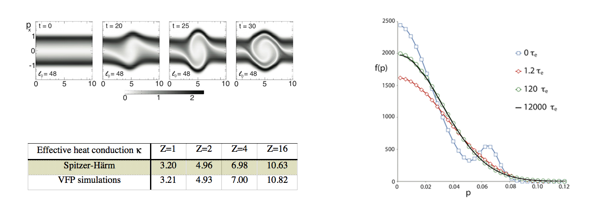

Access: You can obtain OSHUN from Github here.
Description: OSHUN is a unique parallel relativistic 2D3P Vlasov-Fokker-Planck (C++) code that incorporates a spherical harmonic expansion of the distribution function, where the number of terms is an input parameter that determines the angular resolution in momentum-space [Tzoufras:11,13]. The algorithm employs the full 3D electromagnetic fields and a rigorous linearized Fokker-Planck collision operator. The numerical scheme conserves energy and number density. The main advantage of this approach is realized for collisional plasmas, in which angular scattering tends to isotropize the distribution function by rapidly damping the high-order harmonics. This makes it is possible to capture most of the key physics using only a few terms in the expansion.
Below we present three tests with the code.
1. The evolution of the relativistic two-stream instability in the frame of reference of the unstable wave.
2. The relaxation of a bump-on-tail particle distribution to a Maxwellian due to electron-electron collisions.
3. The calculation of the Spitzer-Harm heat conduction coefficient.

Figures (clockwise): Figure 1: The evolution of the relativistic two-stream instability in the frame of the unstable wave is shown from a simulation with OSHUN; Figure 2: The evolution of a bump-on-tail distribution of electrons under the influence of collisions between identical particles; Figure 3: The code recovers the Spitzer- Härm heat conduction with excellent accuracy.
The ability of this code to handle an arbitrary degree of anisotropy was demonstrated in [Tzoufras:11] with simulations of highly unstable relativistic plasmas. To corroborate, we show in Figure 1 results from [ibid] which describe the evolution of two relativistic counter-streaming beams in the frame of reference of the unstable wave. The collision operator ensures conservation of energy and number density, and Figure 2 from [ibid] shows that a particle distribution relaxes to a Maxwellian and maintains this profile even after 100,000 collision times. A holistic, rigorous test of any collision operator, especially in the context of transport, is its ability to recover the Spitzer-Härm heat conduction [Spitzer-Härm:53]. OSHUN simulations yield the effective Spitzer-Härm coefficient with excellent accuracy for all values of Z.
OSHUN can potentially be used to study a wide range of plasma phenomena. For example, in relation to laser-driven inertial confinement fusion, OSHUN could be used to simulate the evolution of plasma waves, the non-local transport of electrons across laser speckles and into higher densities, the decoherence of stimulated Raman scattering inflation due to collisions, and the flattening of the distribution function due to inverse Bremsstrahlung leading to a new type of inflation.
OSHUN is publicly available on GitHub here.
References
[Tzoufras:11] M. Tzoufras, A. R. Bell, P. A. Norreys, F. S. Tsung, “A Vlasov-Fokker-Planck code for high energy density physics,” Journal of Computational Physics 230, 6475 (2011). doi link
[Tzoufras:13] Tzoufras, M., Tableman, A., Tsung, F. S., Mori, W. B., Bell, A. R., “A multi-dimensional Vlasov-Fokker-Planck code for arbitrarily anisotropic high-energy-density plasmas.” Phys. Plasmas 20, 056303 (2013). doi link
[Spitzer-Härm:53] L. Spitzer, R. Härm, “Transport Phenomena in a Completely Ionized Gas,” Phys. Rev. 89, 977 (1953).